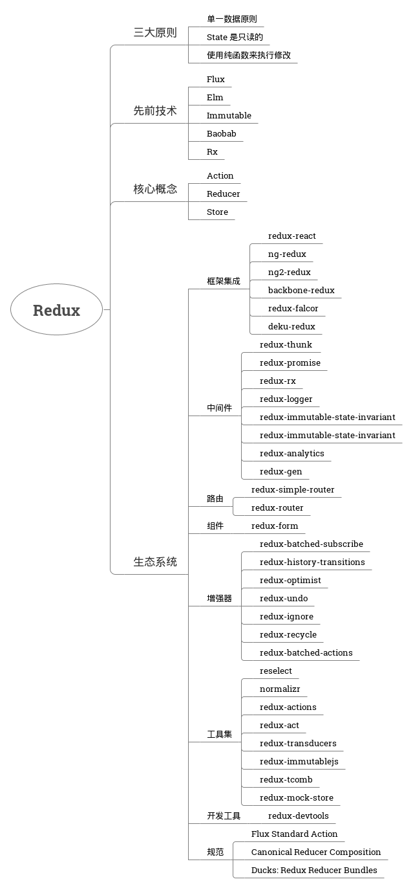

简介
- 是什么：可预测化的状态管理容器
特性
- 运行于不同的环境：客户端，服务器，原生应用
- 超爽的开发体验，如：时间旅行调试器可以编辑后实时预览
- 除了 React，还可以支持其他界面库
- 体积小，只有 2KB，且没有任何依赖
安装：
npm i --save redux- 用法：View(DOM，React等) -> Action(描述发生了什么的对象) -> Reducer(纯函数，描述了 action 如何把 state 转变为下一个 state) -> Store(单一数据源) -> 更新 View
动机
由于前端单页应用开发越来越复杂，JavaScript 需要管理许多不同来源（服务器，用户交互等）的状态变得非常困难 —— 搞不清楚状态在什么地方，在什么时候，由于什么原因变化。
Redux 是如何解决前端复杂的状态管理？ —— 基于三大原则
三大原则
单一数据源
- 规范状态存储，解决传统开发模式中状态存储混乱的问题 —— 基于 jQuery 开发时，很多开发人员都简单的把数据扔到全局命名空间里
- 让同构应用开发变得非常容易？ —— 待学习
- 单一的状态树，调试更加容易 —— 可以把状态保存到本地，方便查看状态（以前开发时想看状态必须打印日志来查看，导致打印日志代码泛滥）
状态是只读的：确保只能通过触发 Action 来修改状态，所有的修改都被集中化处理，且严格按照一个接一个的顺序执行
Action 只是普通对象，可以被日志打印，可以在维护时很方便的找到状态改变的来源。
相比起来，以往开发在无论生成还是开发环境代码的各个地方都存在着
console.log（曾今看到一个函数里写了 10 多个日志打印）。而 redux 可以利用中间件，可插拔式的开启或关闭日志打印，可以减少大量的日志打印代码。使用纯函数来执行修改：Reducer 只能是一些纯函数 —— 便于编写可复用的 reducer
先前技术
Flux 是一个混合产物，了解 Redux 与其他技术的相似与不同之处
Flux
- 相同点：Redux 的灵感来源于 Flux 的几个重要特性，他们都是将模型的更新逻辑全部集中于一个特定的层；
- 不同点：Redux 没有 Dispatcher，且不支持多个 Store，只有一个单一的 Store 和一个根级的 reduce 函数；
Elm：
- 相同点：Elm 的 “updater” 与 Redux 里的 reducer 服务于相同的目的；
- 不同点：Elm 是一种函数式编程语言，在执行纯度，静态类型，不可变动性，action 和模式匹配等方面更具优势；
Immutable：Immutable 是一个可实现持久数据结构的 JavaScript 库，可以与 Redux 对接良好。
- Baobab：Baobab 实现了数据不可变特性的 API —— 用以更新纯 JavaScript 对象，可以在 Redux 中使用，但没有什么优势。
- Rx：Reactive Extensions 是管理复杂异步应用非常优秀的方案，和 Redux 一起使用，可以配合得很好。
生态系统

示例
最基本的用法：View，Create Action，Action，Reducer，Store
如何与界面框架搭配使用，如 redux-react
常用的 Redux 模式
实现异步 Action
使用 ID 来标准化存储数据实体
https://github.com/reactjs/redux/tree/master/examples/shopping-cart
在不同层级将多个 reducer 组合使用
https://github.com/reactjs/redux/tree/master/examples/shopping-cart
深层嵌套树状视图的渲染
https://github.com/reactjs/redux/tree/master/examples/tree-view
使用 Redux Logger 生成日志
https://github.com/reactjs/redux/tree/master/examples/shopping-cart
服务端渲染：https://github.com/reactjs/redux/tree/master/examples/universal
- 完整的应用示例：https://github.com/reactjs/redux/tree/master/examples/real-world